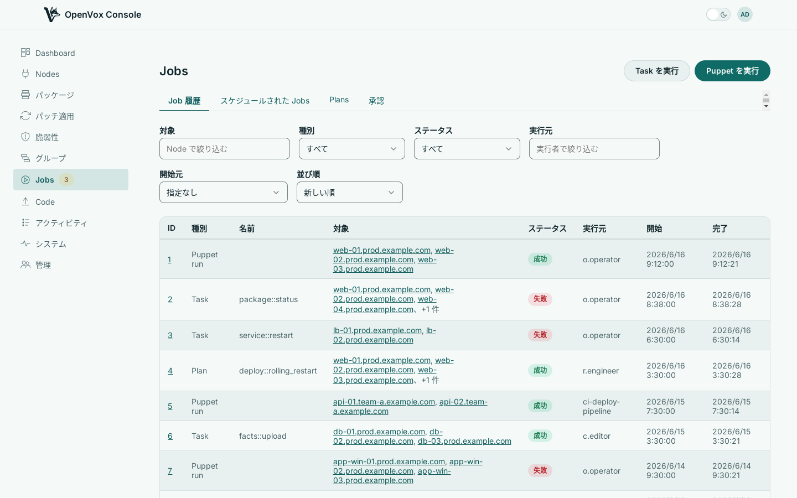

選んだ Node で Puppet、Tasks、Plans を実行し — 今すぐでもスケジュールでも — 結果が Node ごとに返ってくる様子を見守れます。
Job 単位ではなく Node 単位の結果
対象ごとに個別に記録されます: ステータス、終了コード、出力。9 台の Nodes で成功し 1 台で失敗した Job は、単一の判定にまとめられて後から調べ直す必要が生じるのではなく、そのとおりに表示されます。
Job が Puppet run を引き起こした場合、その結果はその実行が生成した Report へ直接リンクします — 「実際に何が変わったのか」がワンクリックで分かります。


Tasks、Plans、スケジュール
deploy したコードから Task を実行できます。パラメーターは宣言された型に照らして検査され、機密の値はどの記録にも残りません。Puppet run と Task を連結して Plan にまとめ、保存して再実行できます。あるいは、コードの横に YAML で Plan を書けば、型付きのパラメーターとステップ間での結果の受け渡しを備えたその Plan をコンソールが実行します — Bolt は不要です。
いずれも保存して後で開始できます。一度だけでも繰り返しでも可能です。スケジュールは発火のたびに対象の Node を選び、その時点で所有者が持つアクセス権で実行されるため、所有者がもうできなくなったことをスケジュールが行い続けることはありません。
対象はリストではなくルールで選ぶ
Node を名前で指定するか、Node グループを指すか、PQL クエリを書けば、Job の開始時にコンソールが対象の Node を割り出します。Puppet は実行ごとに、no-op で何が変わるかを確認したり、別の Environment に対して実行したり、デバッグ出力付きで実行したりできます。
エージェントを実行できないホストにも SSH で到達できます。Task は他の Node と同様にそれらで実行されます。
オーケストレーションは NATS 上で動作するため、大規模なフリートへの到達はメッセージ経路の作り直しではなく、容量を追加するだけの話になります。
やってみる
1 台の Node、選択した Node、クエリに一致する Node、または Node グループに対して、Puppet または Puppet Task を任意のタイミングで実行し、各 Node が何を行ったかを確認します。
Plan (順番に実行される Puppet run と Task の一覧) を組み立てて保存し、選んだ Node で実行して、各ステップを見守ります。
Puppet run、Task、Plan を保存して後で開始します。一度だけでも繰り返しでも、開始のたびに割り出される Node に対して実行されます。
モジュール内にある YAML の Plan を、型付きのパラメーター、ステップ間での結果の受け渡し、Node グループに照らしたすべての Task の検査とともに実行します。
OpenVox Console は、push のたびに amd64 と arm64 向けにビルドされるコンテナイメージと、単一のバイナリとして提供されます。インストールガイドでは、コンテナまたはパッケージを使って、空のホストから openvoxserver、openvoxdb、Postgres、コンソールからなる稼働するデプロイまでを案内します。